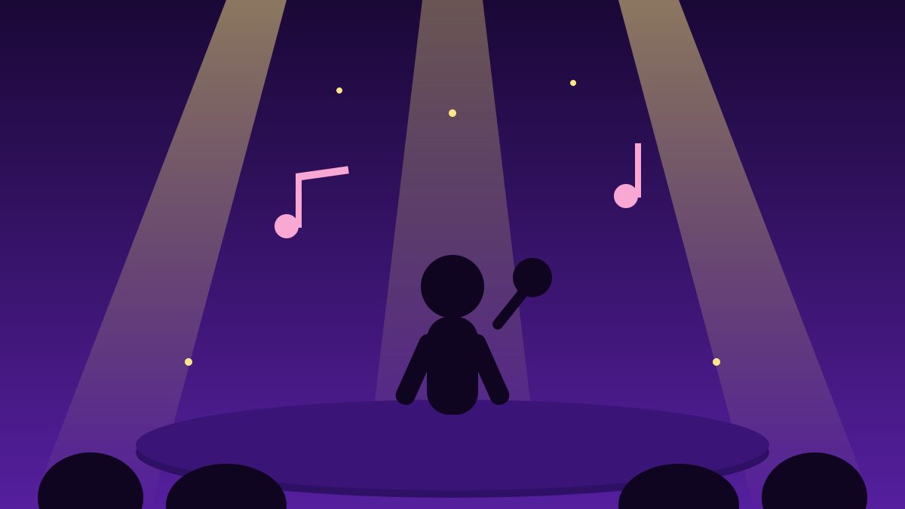

1 / 6

🎬 HIBURAN
"Man I Need" bakal dinyanyiin LIVE di Jakarta! 😭
Olivia Dean resmi jadi headliner LaLaLa Fest 2027 — dan ini kali pertamanya manggung di festival Asia Tenggara. Spill detailnya →
2 / 6
📢
Diumumkan Kemarin, Langsung Heboh
LaLaLa Fest ngumumin Olivia Dean sebagai headliner #LaLaLa2027 lewat Instagram @lalala.fest, Rabu (7/10/2026). Penyanyi Inggris ini disebut peraih Grammy yang melejit lewat "Man I Need", "Nice To Each Other", dan "So Easy (To Fall In Love)".
Sebelumnya fans udah curiga gegara panitia nyelipin potongan lirik lagunya di layar raksasa gelaran Jakarta — dan beneran kejadian!
3 / 6
🗺️
Format Baru: 3 Negara, 3 Tanggal
LaLaLa 2027 ngusung konsep "Three Countries. One-Day Festival": Manila (Philippine Arena, 14 Januari 2027), Indonesia (ICE BSD City, 17 Januari 2027), dan Bangkok (Impact Challenger Hall, 20 Januari 2027).
Ekspansinya digarap bareng PK Entertainment — lineup artisnya disebut bakal sama di ketiga negara.
4 / 6
🎶
Bukan Cuma Olivia Dean!
Panggung ICE BSD City juga diisi nama-nama lintas genre: Jungle, St. Vincent, DYGL, Mali, Billyrrom, Rum Jungle, Marquise, Lightcraft, Kirara, Krly, Tarasinta, Patras, dan Rimba.
Kombinasi musisi internasional + lokal ini dirancang buat pengalaman maksimal sepanjang hari. Satu hari penuh musik, gas pol! 🎸
5 / 6
💬
Kata netizen
Carousel Volix Media di Instagram yang ngabarin Olivia Dean bakal manggung 17 Januari 2027 langsung dibanjiri komentar heboh fans yang udah nungguin dia ke Indonesia.
(Suara netizen — bukan fakta.)
6 / 6
🤔
Efeknya ke lo apa?
Jadwal konser awal 2027 lo nambah satu! Dari sekarang udah bisa nabung buat tiket ICE BSD, planning cuti, dan booking akomodasi sekitar Tangerang biar nggak ketinggalan momen perdana Olivia Dean di Asia Tenggara. 🎟️